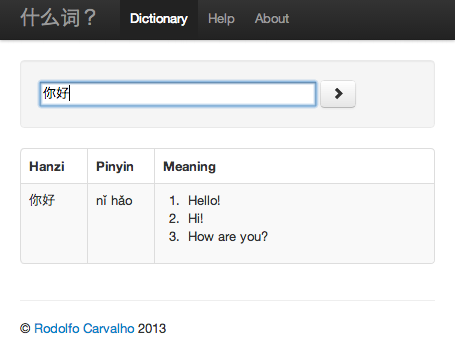
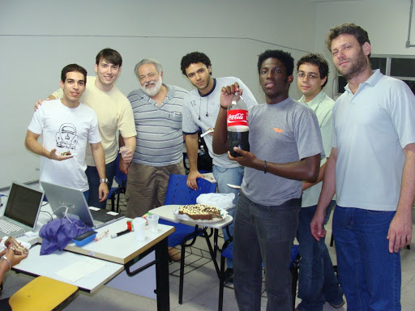

About

Rodolfo is a Computer and Information Engineer, passionate about software development and sharing of knowledge.
Born in Rio de Janeiro, curious and fascinated by this imense world, he's happy and grateful for having lived in Lisbon, Beijing, Kraków and Brno while also visiting other cities and countries.
Son of the best mother in the world, he likes sports, nature, exploring cities in unconventional ways and learning spoken languages.
He believes that continuous learning is a must and that technology must be used for the betterment of the world. To that end, small acts make great revolutions. His Agile mindset towards project management and development values people first.

As a craftsman, he picks the best tools or builds his own. Correct, beautiful and well-tested code is valued.
With a computer at hand, he is a polyglot, loves coding in Go, Python, Racket or anything else to solve meaningful problems. Distributed systems and containers? Check. Automation with Ansible? Check.
Rodolfo currently works on OpenShift, the open source container platform by Red Hat.
He is often attending and giving talks in software community events.
Projects
Selected list of some personal projects.
Coding Dojo Brno
The Coding Dojo Brno is a weekly community event in Brno, Czech Republic.

It started in early 2016 as a means to spread programming skills and techniques.
redgreen
redgreen is your companion during TDD sessions.

This tool provides instantaneous feedback about the current state of a test suite, automatically triggered whenever a file changes. It shows a green or red bar and a history of the previous test runs, useful for keeping track of clean refactors from green to green.
typokiller
typokiller is a tool to automate spellchecking source code.

It can be used to find and fix typos in comments, documentation and text files in general.
XMPPVOX
XMPPVOX is a chat client for blind computer users.

It literally breaks barries, as it enables visually impaired people to communicate with their peers in a transparent way, by means of Text-to-Speech and a specially-crafted command interface.
With XMPPVOX, it doesn't matter whether you're blind or not, nor whether you're talking to someone who also uses XMPPVOX or any other chat client.
Behind the scenes, it is multiplatform adhoc-proprietary-protocol-to-XMPP bridge that connects DOSVOX users to XMPP networks. Since DOSVOX is available on Windows only, XMPPVOX is currently distributed as a single Windows executable.
Shenmeci
Shenmeci is a Chinese-English-Chinese online dictionary.

With Chinese text as input, it does a dictionary based word segmentation (Chinese has no whitespace) and provides translation for each word.
For non-Chinese input it searches for entries in the dictionary quickly using a full-text index.
elephant-tracker
elephant-tracker is a usage tracker.
It is a web server companion for XMPPVOX, keeping information about how XMPPVOX is being used.
Coding Dojo Rio
The Coding Dojo Rio was started in late 2008 and is pure reason to smile :-)

DojoRio is the first open Coding Dojo group in the state of Rio de Janeiro, Brazil. It grew big, has had several branches in the city and state, and even influenced the creation of new Coding Dojos around Brazil and the world!
It's a weekly event in which people exchange knowledge and practice programming techniques and soft skills. At this point, it is certainly one of the oldest uninterrupted coding dojos in existence around the world.
Coding Kwoon Beijing
The Coding Kwoon Beijing was an early-stage community-building project started in 2013 in Beijing, China.

This was an effort to spread the Coding Dojo culture in China, sharing skills on programming techniques, team work and communication.